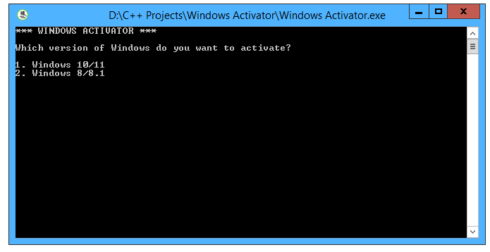
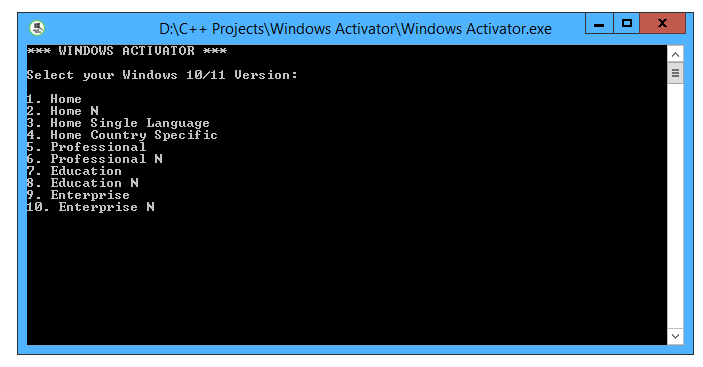
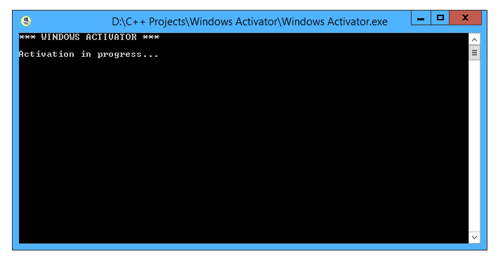

Windows Activator
This is a Windows activator that works for every edition of
Windows 8, 8.1, 10 and 11.
This program has been coded in C++, and I made it lightview while
also being feature rich and entirely functional.
Scroll down for the download.
Screenshots:



Downloads:
Home
Subscribe to my youtube channel, Just Tech, by clicking
here